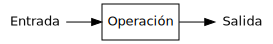
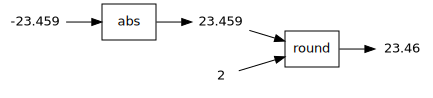

Expresiones
Ricardo Pérez López
IES Doñana, curso 2021/2022
1 El lenguaje de programación Python
1.1 Historia
Python fue creado a finales de los ochenta por Guido van Rossum en el Centro para las Matemáticas y la Informática (CWI, Centrum Wiskunde & Informatica), en los Países Bajos, como un sucesor del lenguaje de programación ABC.
El nombre del lenguaje proviene de la afición de su creador por los humoristas británicos Monty Python.

Python alcanzó la versión 1.0 en enero de 1994.
Python 2.0 se publicó en octubre de 2000 con muchas grandes mejoras. Actualmente, Python 2 está obsoleto.
Python 3.0 se publicó en septiembre de 2008 y es una gran revisión del lenguaje que no es totalmente retrocompatible con Python 2.
1.2 Características principales
Python es un lenguaje interpretado, dinámico y multiplataforma, cuya filosofía hace hincapié en una sintaxis que favorezca un código legible.
Es un lenguaje de programación multiparadigma. Esto significa que más que forzar a los programadores a adoptar un estilo particular de programación, permite varios estilos: programación orientada a objetos, programación imperativa y programación funcional.
Tiene una gran biblioteca estándar, usada para una diversidad de tareas. Esto viene de la filosofía «pilas incluidas» (batteries included) en referencia a los módulos de Python.
Es administrado por la Python Software Foundation y posee una licencia de código abierto.
La estructura de un programa se define por su anidamiento.
1.3 Instalación
Instalación en Ubuntu:
Python 3 ya viene instalado en Ubuntu 20.04 y posteriores, pero es conveniente ejecutar los siguientes comandos desde un terminal del sistema operativo:
$ sudo add-apt-repository universe $ sudo apt update $ sudo apt install python-is-python3 python3-pip $ mkdir -p ~/.local/binAl acabar, cerrar la sesión con el sistema operativo y abrir una nueva antes de continuar.
Asimismo, es conveniente asegurarse de que no hay ciertos paquetes de Python instalados provenientes del repositorio de Ubuntu (se instalarán directamente desde Visual Studio Code):
Instalación en Windows:
Visitar https://www.python.org/downloads/windows y descargar desde ahí la última versión estable.
Durante la instalación, marcar la casilla que activa la opción de añadir comandos al PATH.
1.4 Funcionamiento del intérprete
El intérprete de Python tiene dos modos de funcionamiento:
Modo interactivo (REPL): se abre una sesión interactiva con el intérprete donde éste nos solicita que introduzcamos una instrucción (sentencia o expresión) y, a continuación, la ejecuta inmediatamente, para luego volver a solicitar una nueva instrucción, repitiendo este ciclo indefinidamente en un diálogo continuo entre el programador y el intérprete.
Es el modo más apropiado para aprender el lenguaje o hacer pruebas rápidas, y el que empezaremos a usar nosotros.
Modo por lotes: el intérprete ejecuta un programa previamente escrito por el programador y almacenado en archivos fuente (llamados scripts) que contienen instrucciones que el intérprete va ejecutando una tras otra.
Es el modo que utilizan los usuarios para ejecutar los programas previamente confeccionados por los programadores.
1.4.1 Entrar y salir del intérprete
Para entrar en el intérprete interactivo, se usa el comando
pythondesde la línea de órdenes del sistema operativo:$ python Python 3.8.2 (default, Apr 27 2020, 15:53:34) [GCC 9.3.0] on linux Type "help", "copyright", "credits" or "license" for more information. >>>El mensaje que obtengamos puede que no sea exactamente igual, pero es importante comprobar que estamos usando Python 3 y no 2.
Para salir, se pulsa
Ctrl+Den Ubuntu oCtrl+Zen Windows.El
>>>es el prompt del intérprete de Python, desde el que se ejecutan las expresiones y sentencias que tecleemos:
2 Elementos de un programa
2.1 Expresiones y sentencias
El código fuente de un programa está formado por instrucciones que pertenecen a dos grandes grupos principales:
Expresiones: son secuencias de símbolos que representan valores y que están formados por datos y (posiblemente) operaciones a realizar sobre esos datos. El valor al que representa la expresión se obtiene evaluando dicha expresión.
Sentencias: son órdenes que sirven para pedirle al intérprete que ejecute una determinada acción.
Las sentencias pueden contener expresiones.
En muchos lenguajes de programación, una expresión por sí sola también es una sentencia válida, ya que expresan la orden de calcular el valor de la expresión.
\begin{array}{c} \text{En un programa hay dos} \\ \text{tipos de instrucciones} \end{array} \begin{cases} \text{\textbf{Expresiones}} \begin{cases} \text{- Se evalúan} \\ \text{- Representan valores} \\ \text{- Están formadas por} \begin{cases} \text{\textbf{Datos}} \\ \text{\textbf{Operaciones}} \end{cases} \\ \text{- Por sí solas también pueden ser sentencias} \end{cases} \\\\ \text{\textbf{Sentencias}} \begin{cases} \text{- Son órdenes que provocan acciones} \\ \text{- Se ejecutan} \\ \text{- Pueden contener expresiones} \end{cases} \end{cases}
Las expresiones se evalúan y denotan un valor.
Las sentencias se ejecutan y provocan una acción.
2.2 Sintaxis y semántica de las expresiones
Definición:
Una expresión es una frase (secuencia de símbolos) sintáctica y semánticamente correcta según las reglas del lenguaje que estamos utilizando, cuya finalidad es la de representar o denotar un determinado objeto, al que denominamos el valor de la expresión.
El ejemplo clásico es el de las expresiones aritméticas:
Están formadas por secuencias de números junto con símbolos que representan operaciones aritméticas a realizar con esos números.
Denotan un valor numérico, que es el resultado de calcular el valor de la expresión tras hacer las operaciones que aparecen en ella.
Por ejemplo, la expresión
(2 * (3 + 5))denota un valor, que es el número abstracto dieciséis.
La sintaxis de las expresiones correctamente formadas deben satisfacer la gramática del lenguaje en el que están escritas.
Si una expresión es sintácticamente correcta, su semántica (es decir, su significado) es el valor al que representa.
En un lenguaje de programación existen muchos tipos de expresiones, dependiendo del tipo de los datos y de las operaciones involucradas en dicha expresión.
Empezaremos trabajando con las expresiones aritméticas más sencillas para ir incorporando cada vez más elementos nuevos que nos permitan crear expresiones más complejas.
Para ello, nos basaremos en la siguiente gramática, la cual es una simplificación modificada de la gramática real que deben satisfacer las expresiones en Python:
⟨expresión⟩ ::= ⟨operación⟩ | ⟨literal⟩ | ⟨nombre⟩
⟨operación⟩ ::=(⟨expresión⟩ ⟨operador_binario⟩ ⟨expresión⟩)
|(⟨operador_unario⟩ ⟨expresión⟩)
| ⟨llamada_función⟩ | ⟨llamada_método⟩
⟨nombre⟩ ::=identificador
⟨literal⟩ ::=entero|real|cadena| …
⟨operador_binario⟩ ::=+|-|*|/|//|**|%| …
⟨operador_unario⟩ ::=+|-| …
⟨llamada_función⟩ ::= ⟨función⟩([⟨lista_argumentos⟩])
⟨función⟩ ::=identificador
⟨llamada_método⟩ ::= ⟨objeto⟩.⟨método⟩([⟨lista_argumentos⟩])
⟨objeto⟩ ::= ⟨expresión⟩
⟨método⟩ ::=identificador
⟨lista_argumentos⟩ ::= ⟨expresión⟩(,⟨expresión⟩)*
Esta gramática reconoce expresiones totalmente parentizadas, en las que cada operación a realizar con operadores va agrupada entre paréntesis, aunque no sea estrictamente necesario, como por ejemplo:
(3 + (4 - 7))Otros ejemplos de expresiones que satisfacen dicha gramática:
24(4 + 5)(-(8 * 3.5))(9 * (x - 2))z(abs(-3) + (max(8, 5) / 2))
Sabemos que todas esas expresiones son sintácticamente correctas según nuestra gramática porque podemos construir derivaciones desde el símbolo inicial ⟨expresión⟩ hasta cada expresión.
Ejercicio
- Obtener las derivaciones correspondientes de cada una de las expresiones.
Muchas veces, de ahora en adelante representaremos las expresiones combinando distintos colores y estilos tipográficos con la única finalidad de facilitar la lectura y ayudar a reconocer los diferentes elementos sintácticos que las componen.
A esta técnica se la denomina resaltado de sintaxis.
Por ejemplo, las expresiones anteriores quedarían así:
(3 + (4 - 7))24(4 + 5)(-(8 * 3.5))(9 * (x - 2))z(abs(-3) + (max(8, 5) / 2))
3 Valores
3.1 Datos, tipos y valores
La Informática es la ciencia que estudia los sistemas de procesamiento automático de la información.
Esos sistemas (los sistemas informáticos) procesan la información de forma automática siguiendo las instrucciones de un programa.
Las instrucciones que forman el programa son las que dictan qué operaciones hay que realizar con la información.
Esa información se codifica, almacena y manipula en forma de datos.
Los datos, por tanto, son información codificada y almacenada en un formato y en un soporte adecuados para ser manipulados por un sistema informático.
Esos datos pueden ser:
Datos de entrada o salida, que representan información de interés para el usuario del programa y que, o bien se reciben del usuario o bien se envían al usuario, respectivamente.
Datos internos que usa el programa para su correcto funcionamiento.
La información concreta que un dato almacena en un momento dado se denomina el valor del dato. Se dice que un dato posee (o tiene o contiene) un valor, o que vale ese valor.
Si el valor de un dato nunca cambia, decimos que ese dato es constante.
En cambio, si el valor de un dato puede cambiar durante el funcionamiento del programa, decimos que es un dato variable.
Los valores se agrupan en tipos, que son conjuntos de valores que comparten características comunes (las cuales son, principalmente, las operaciones que se pueden realizar con esos valores).
Por tanto, un determinado valor pertenece a un tipo.
Igualmente, también decimos que los datos tienen un tipo, que es el tipo de los valores que puede tener el dato. Por eso, a los tipos también se les llama tipos de datos.
El tipo de un dato determina el conjunto de valores que puede tomar un dato de ese tipo y, por tanto, también las operaciones que se pueden realizar con ese dato.
Los datos se pueden manipular dentro de un programa haciendo que formen parte de expresiones y evaluando dichas expresiones.
El valor de una expresión se obtiene a través del valor de los datos que contiene, y podemos manipular esos datos a través de las operaciones que actúan sobre ellos dentro de la expresión.
Ejemplo
Supongamos que queremos representar en un sistema informático la edad de una persona.
Esa información la codificamos en un dato al que llamaremos edad.
Ese dato edad será un dato variable, ya que la edad de una persona cambia con el tiempo y, por tanto, el valor que contenga el dato podrá cambiar.
Por otra parte, la edad de una persona se puede representar mediante un número entero no negativo (mayor o igual que cero), así que el dato edad debería contener un valor que sea un número entero sin signo.
Por tanto, el tipo del dato edad es el conjunto de los números enteros sin signo y, en consecuencia, el valor del dato edad podría ser cualquiera de los números que están dentro de ese conjunto.
Si, por ejemplo, una determinada persona tiene una edad de 12 años, decimos que el valor del dato edad para esa persona es 12, o que su edad vale 12 (actualmente).
Dentro de un año, el valor de ese dato pasará a ser 13.
Por eso decimos que la edad es un dato variable.
En cambio, su fecha de nacimiento es un valor constante, ya que nunca cambia.
Recordemos que el tipo de un dato también determina las operaciones que podemos realizar con él, ya que (en principio) cada operación sólo actúa sobre datos de un determinado tipo.
Como el dato edad es un número entero, podemos realizar operaciones aritméticas sobre él. Por ejemplo, podemos restar la edad al año actual para averiguar el año de nacimiento de esa persona.
En Python, los tipos de datos básicos son los siguientes (entre paréntesis va el nombre que tienen cada uno de esos tipos en Python):
Números enteros (
int): los números (positivos o negativos) que sólo tienen parte entera, como el cuatro o el menos tres.Números reales (
float): los números (positivos o negativos) que tienen parte entera y parte fraccionaria, como el siete con cuatro o el menos ocho con diecisiete.Cadenas de caracteres (
str): secuencias de caracteres (letras, dígitos, símbolos, etc.), como nombres de personas, direcciones, o cualquier texto en general.Lógicos (
bool): sólo contiene dos valores que representan dos posibilidades contrarias, como verdadero o falso, sí o no, encendido o apagado, etc.
Por tanto, cuando un dato es un número entero, en Python decimos que pertenece al tipo
int; cuando es una cadena, decimos que pertenece al tipostr; etcétera.
Para indicar que un dato tiene (o pertenece a) un determinado tipo, se pueden usar distintas notaciones dependiendo del lenguaje empleado.
Por ejemplo, si queremos indicar que el dato edad es un número entero (es decir, que es de tipo entero), se puede representar así:
En Matemáticas y Teoría de Tipos:
edad: \mathbb{Z}
En Python:
edad
:intEn Java:
intedad
3.2 Evaluación de expresiones
Evaluar una expresión consiste en determinar el valor de la expresión. Es decir, una expresión representa o denota el valor que se obtiene al evaluarla.
El tipo de la expresión es el tipo del valor de esa expresión.
Una subexpresión es una expresión contenida dentro de otra.
La evaluación de una expresión, en esencia, es el proceso de sustituir (o reescribir), dentro de ella, unas subexpresiones por otras que, según indiquen ciertas reglas, estén más cerca del valor final a calcular, y así hasta calcular el valor de la expresión al completo.
Al mismo tiempo, también se va calculando el tipo de sus subexpresiones (el tipo del valor de cada subexpresión) y, finalmente, se obtiene el tipo de la propia expresión, que será el tipo del valor de esa expresión.
Además de las expresiones existen las sentencias, que no poseen ningún valor y que, por tanto, no se evalúan sino que se ejecutan. Las sentencias son básicas en los paradigmas imperativos.
Podemos decir que las expresiones:
3(1 + 2)(5 - 2)denotan todas el mismo valor (el número abstracto tres, cuyo tipo es el conjunto de los números enteros).
Es decir: todas esas expresiones son representaciones diferentes del mismo ente abstracto.
Cuando introducimos una expresión en el intérprete, lo que hace éste es buscar la representación más simplificada o reducida posible.
En el ejemplo anterior, sería la expresión
3.Por eso a menudo usamos, indistintamente, los términos reducir, simplificar y evaluar.
3.3 Expresión canónica y forma normal
Los ordenadores no manipulan valores, sino que sólo pueden manejar representaciones concretas de los mismos.
Por ejemplo: utilizan la codificación binaria en complemento a dos para representar los números enteros.
Pedimos que la representación del valor resultado de una evaluación sea única.
De esta forma, seleccionaremos de cada conjunto de expresiones que denoten el mismo valor, a lo sumo una que llamaremos expresión canónica de ese valor.
Además, llamaremos a la expresión canónica que representa el valor de una expresión la forma normal de esa expresión.
Con esta restricción pueden quedar expresiones sin forma normal.
Recuerda
Se dice:
Expresión canónica de un valor.
Forma normal de una expresión.
Ejemplo
De las expresiones anteriores:
3(1 + 2)(5 - 2)que denotan todas el mismo valor abstracto tres, seleccionamos una (la expresión
3) como la expresión canónica de ese valor.Igualmente, la expresión
3es la forma normal de todas las expresiones anteriores (y de cualquier otra expresión con valor tres).Es importante no confundir el valor abstracto tres con la expresión
3que representa dicho valor.
Hay valores que no tienen expresión canónica:
Las funciones (los valores de tipo función).
El número \pi no tiene representación decimal finita, por lo que tampoco tiene expresión canónica.
Y hay expresiones que no tienen forma normal:
Si definimos inf = inf + 1, la expresión inf (que es un número) no tiene forma normal.
Lo mismo ocurre con 1\over0.
3.4 Formas normales y evaluación
Según lo visto hasta ahora, la evaluación de una expresión es el proceso de encontrar su forma normal.
Para ello, el intérprete evalúa la expresión reduciendo sus subexpresiones según las reglas del lenguaje y las operaciones que aparecen en ellas, buscando su forma normal.
El sistema de evaluación dentro del intérprete está hecho de tal forma que cuando ya no es posible reducir más la expresión es porque se ha llegado a la forma normal.
Recordemos que no todos los valores tienen forma normal.
El orden en el que se van reduciendo las subexpresiones no debe influir en el resultado de evaluar una expresión, así que debería dar igual elegir una u otra subexpresión.
De todas formas, los lenguajes de programación suelen imponer un orden concreto a la hora de evaluar las expresiones.
Tanto en Python como en Java (los dos lenguajes que veremos), el orden de evaluación es de izquierda a derecha (salvo excepciones):
Orden de evaluación de las expresiones:
Al evaluar una expresión, las subexpresiones que la forman siempre se evaluarán de izquierda a derecha.
El orden de evaluación de las subexpresiones es un asunto más complejo de lo que parece, y lo estudiaremos en profundidad en posteriores apartados.

Ejemplos
Evaluar la expresión
(2 + 3):La expresión está formada por un operador
+que actúa sobre las dos subexpresiones2y3. Por tanto, habrá que evaluar primero esas dos subexpresiones, siempre de izquierda a derecha:(2 + 3) # se evalúa primero 2 (que devuelve 2) = (2 + 3) # luego se evalúa 3 (que devuelve 3) = (2 + 3) # ahora se evalúa (2 + 3) (que devuelve 5) = 5El
+por sí solo no se evalúa, ya que no es una expresión válida.
Por tanto, la expresión
5es la forma normal de la expresión(2 + 3), y ambas representan al valor cinco, que es un valor de tipo entero.Asimismo, decimos que
5es la expresión canónica del valor cinco, de tipo entero (es la expresión que mejor representa a ese valor).
Evaluar la expresión
(2 * (3 + 5)):La expresión está formada por un operador
*que actúa sobre las dos subexpresiones2y(3 + 5).La segunda subexpresión, a su vez, está formada por un operador
+que actúa sobre las dos subexpresiones3y5.Todas las subexpresiones se evalúan siempre de izquierda a derecha, a medida que se van reduciendo:
Por tanto, la expresión
17es la forma normal de la expresión(2 + (3 * 5)). Ambas representan al valor diecisiete, que es un valor de tipo entero, pero17es la expresión canónica de ese valor.
Evaluar la expresión
((2 + 5) * 3):La expresión está formada por un operador
*que actúa sobre las dos subexpresiones(2 + 5)y3.La primera subexpresión, a su vez, está formada por un operador
+que actúa sobre las dos subexpresiones2y5.Todas las subexpresiones se evalúan siempre de izquierda a derecha, a medida que se van reduciendo:
Por tanto, la expresión
21es la forma normal de la expresión((2 + 5) * 3). Ambas representan al valor veintiuno, que es un valor de tipo entero, pero21es la expresión canónica de ese valor.
De ahora en adelante, para simplificar las explicaciones, a menudo usaremos la expresión canónica de un valor como si fuera el valor mismo, cuando ya sabemos que, en realidad, no son lo mismo.
Por ejemplo: diremos «el valor
21» cuando, en realidad,21no es el propio valor veintiuno, sino una expresión que representa al valor veintiuno.Esto lo haremos en contextos donde no haya confusión, y siempre entendiendo que cuando decimos «el valor
21» nos referimos al valor que representa la expresión21.
3.5 Literales
Los literales constituyen las expresiones más sencillas del lenguaje.
Un literal es una expresión simple que denota un valor concreto, constante y fijo, escrito directamente en la expresión y ya totalmente reducido (o casi) a su expresión canónica.
Los literales tienen que satisfacer las reglas léxicas del lenguaje, que son las que determinan qué forma pueden tener los componentes léxicos del programa (como números, cadenas, identificadores, etc.).
Gracias a esas reglas, el intérprete puede identificar qué literales son, qué valor representan y de qué tipo son.
Ejemplos de distintos tipos de literales:
Números enteros (tipo int)Números reales
(tipofloat)Cadenas
(tipostr)-23.5"hola"-1-2.7'pepe'0"25"1""2Algunas reglas léxicas son:
Si el número tiene un
.decimal, es que es un número real.Si algo va entre comillas (simples
'o dobles") es que es una cadena.
En apartados posteriores estudiaremos los tipos de datos con más profundidad.
Con frecuencia, un literal resulta ser la expresión canónica del valor al que denotan y la forma normal de todas las posibles expresiones que denotan ese valor.
Por consiguiente, suelen estar ya totalmente simplificados.
Por ejemplo, el
3.5es un literal que denota el valor numérico tres y medio, es su expresión canónica y es la forma normal de cualquier expresión que denote dicho valor.Por tanto, el literal
3.5es la forma más reducida de representar el valor tres y medio.Es decir: si le pedimos al intérprete que calcule el resultado de
7 / 2, nos devolverá la expresión3.5.Sin embargo, el
3.5no es el único literal que denota el valor numérico tres y medio. Por ejemplo, los literales3.50,3.500o03.50también denotan ese mismo valor, pero la forma normal de todos ellos es3.5.O sea: hay varias maneras de escribir un literal que denote el valor tres y medio, pero sólo el literal
3.5es la forma normal de todas ellas.
Igualmente, la forma normal de todas las posibles expresiones que denotan el valor numérico dos es el literal
2.El literal
2es la forma más reducida de representar el valor dos.Pero no es el único literal que denota dicho valor.
El literal
02no es correcto según las reglas léxicas del lenguaje, pero sí que podemos usar la expresión0b10, que es un literal que representa el valor dos escrito en binario.Igualmente, las reglas léxicas del lenguaje permiten usar el carácter
_dentro de un número, por lo que el valor numérico cuatro millones se puede representar con el literal4_000_000, si bien su forma normal sigue siendo simplemente4000000.Finalmente, las cadenas se pueden escribir con comillas simples (
') o dobles ("), pero la forma normal de una cadena siempre usa las simples (salvo que la propia cadena incluya una comilla simple como un carácter más, en cuyo caso se usarán las comillas dobles en su forma normal).
3.6 Identificadores
Los identificadores son nombres que representan elementos dentro de un programa.
Por ejemplo, el nombre de una función es un identificador porque representa a la función.
Los identificadores deben cumplir unas reglas sintácticas que dependen del lenguaje de programación, pero generalmente se resumen en que:
Pueden estar formados por combinaciones de letras, dígitos y algunos caracteres especiales como
_(por ejemplo,salida_principal23).No pueden empezar con un dígito, ya que eso los confundiría con un número (por ejemplo,
9abc).La mayoría de los lenguajes distinguen las mayúsculas de las minúsculas, por lo que
cantidad,CantidadyCANTIDADson normalmente identificadores distintos (así ocurre en Python y Java).
4 Operaciones
4.1 Clasificación
Ya hemos visto que en una expresión puede haber:
Datos (constantes o variables).
Operaciones a realizar sobre esos datos.
A su vez, las operaciones pueden aparecer en forma de:
Operadores
Funciones
Métodos
\text{En una expresión hay} \begin{cases} \text{Datos} \begin{cases} \text{Constantes} \\ \text{Variables} \end{cases} \\ \text{Operaciones} \begin{cases} \text{Operadores} \\ \text{Funciones} \\ \text{Métodos} \end{cases} \end{cases}
Matemáticamente, una operación se corresponde con el concepto de función.
En Matemáticas, una función es una regla que asocia a cada elemento de un conjunto (el dominio) exactamente un elemento (ni más ni menos) de un segundo conjunto (el codominio o rango).
A su vez, las funciones están definidas sobre un conjunto origen y un conjunto imagen.

En Programación, el concepto de operación es también similar al de función matemática, pero con su propia terminología y funcionamiento.
Desde el punto de vista de la Programación, las operaciones son dispositivos que transforman datos de entrada en datos de salida:

Esos datos de entrada se denominan argumentos u operandos, según el tipo de operación.
Asimismo, los datos de salida representan el resultado o valor de retorno de la operación.
El valor de retorno se calcula como resultado de procesar los datos de entrada y, por tanto, depende de la operación a realizar y de los datos recibidos por la entrada.
Visto así, las operaciones son subprogramas, es decir, pequeños programas dentro de otros programas.
Los operadores, las funciones y los métodos no son más que diferentes formas sintácticas de expresar una operación.
En la práctica, apenas hay diferencias sustanciales entre las tres formas.
Por ejemplo, la operación «cuadrado» actúa asociando cada número real con otro número real: el cuadrado del número (el número multiplicado por sí mismo).
Así, esa operación asocia el número 4 con el 16, y el 7 con el 49.
Aquí, tanto el dominio como el codominio de la operación serían \mathbb{R}, el conjunto de los números reales.
Por tanto, podemos definirla diciendo que es una función que asocia \mathbb{R} (su conjunto origen) con \mathbb{R} (su conjunto imagen), lo que se puede representar así: cuadrado: \mathbb{R} \longrightarrow \mathbb{R}
Otro ejemplo sería la operación «inverso», que asocia a cada número real otro número real: el inverso del número (1 dividido entre el número).
Así, esa operación asocia el número 4 con el 0.25 (\frac{1}{4}) y el 5 con 0.2 (\frac{1}{5}).
El conjunto origen y el conjunto imagen siguen siendo \mathbb{R}.
Pero, en este caso, el dominio no coincide con el conjunto origen, ya que no existe el inverso del número 0 (\frac{1}{0}) («inverso» es una operación parcial). Por tanto, el conjunto origen podrá ser \mathbb{R} pero su dominio deberá excluir al cero: \textrm{dom}(inverso) = \mathbb{R} - \{0\}
(En cambio, el conjunto imagen sí coincide con el codominio.)
En consecuencia, podemos definir la función de la siguiente manera: inverso: \mathbb{R} \longrightarrow \mathbb{R}
sabiendo que el dominio de la función no contiene a todo el conjunto origen (el cero no está).
Otro ejemplo sería la operación «suma», que asocia a cada pareja de números reales otro número real: la suma de ambos.
Esa operación asocia, por ejemplo, los números 2 y 3 con el número 5.
En este caso, el dominio de la operación «suma» sería el producto cartesiano del conjunto de los números reales consigo mismo (es decir, el conjunto \mathbb{R} \times \mathbb{R} formado por parejas de números reales).
Por tanto, podemos definir la operación «suma» diciendo que es una operación que asocia \mathbb{R} \times \mathbb{R} (su conjunto origen) con \mathbb{R} (su conjunto imagen), lo que se puede representar así: suma: \mathbb{R} \times \mathbb{R} \longrightarrow \mathbb{R}
4.2 Operadores
Un operador es un símbolo o palabra clave que representa una operación a realizar sobre unos datos.
Los datos sobre los que actúa un operador se denominan operandos.
Por ejemplo, los operadores aritméticos
+,-,*y/, cuando actúan sobre operandos numéricos, representan las operaciones de suma, resta, multiplicación y división, respectivamente.En la expresión
(3 + 4):Los operandos son
3y4.El operador es
+y representa la operación «suma de números».
En la expresión
(9 * 8):Los operandos son
9y8.El operador es
*y representa la operación «multiplicación de números».
Por tanto, la operación «suma» de la que hablamos anteriormente, se puede representar así usando el operador
+: +: \mathbb{R} \times \mathbb{R} \longrightarrow \mathbb{R}Por tanto, el operador
+acepta dos operandos (dos números reales) y devuelve un número real.
4.2.1 Aridad de operadores
La aridad de un operador es el número de operandos sobre los que opera.
Los operadores se clasifican según su aridad en:
Unarios: operan sobre un único operando.
Por ejemplo, el operador
-de cambio de signo:(-(5 + 3)).Binarios: operan sobre dos operandos.
Por ejemplo, la mayoría de los operadores aritméticos.
Ternarios: operan sobre tres operandos.
Veremos un ejemplo más adelante.
4.2.2 Notación de los operadores
La notación de un operador indica en qué posición se escribe dicho operador con respecto a sus operandos en una expresión.
Los operadores se pueden escribir:
Con notación prefija: cuando el operador se escribe antes que los operandos.
Es el que se usa habitualmente para los operadores unarios, como el operador
-de cambio de signo.Con notación infija: cuando el operador se escribe entre los operandos.
Es el que se usa habitualmente para los operadores binarios.
Con notación postfija: cuando el operador se escribe después que los operandos.
Se usa poco en la práctica, salvo casos especiales.
4.2.3 Paréntesis
Los paréntesis sirven para agrupar elementos dentro de una expresión y romper la posible ambigüedad que pueda haber respecto a qué operador actúa sobre qué operandos.
Se usan, sobre todo, para hacer que varios elementos de una expresión actúen como uno solo (una subexpresión) al realizar una operación.
Por ejemplo:
((3 + 4) * 5)vale35(3 + (4 * 5))vale23
Una expresión está correctamente parentizada si tiene los paréntesis bien colocados según dicta la gramática del lenguaje.
Una expresión está totalmente parentizada si agrupa con paréntesis a todas las operaciones con sus operandos.
Hasta ahora, según nuestra gramática, las expresiones correctamente parentizadas son precisamente las que están totalmente parentizadas.
Por ejemplo:
2 +) 3 *( 5(no está correctamente parentizada.(4 + (2 * 5))está correcta y totalmente parentizada.2 + 5no está totalmente parentizada y, por tanto, no está correctamente parentizada según nuestra gramática.
Para reducir la cantidad de paréntesis en una expresión, podemos cambiar nuestra gramática acudiendo a un esquema de prioridades y asociatividades de operadores.
Haciendo eso, ya no hará falta exigir que las expresiones estén totalmente parentizadas.
4.2.4 Prioridad de operadores
En ausencia de paréntesis, cuando un operando está afectado a izquierda y derecha por operadores de distinta prioridad, se aplican las reglas de la prioridad:
El
4está afectado a izquierda y derecha por los operadores+y*, que tienen distinta prioridad, por lo que se aplican las reglas de la prioridad. El*tiene más prioridad que el+, así que agrupa primero el*. Equivale a:Si hiciéramos:
el resultado sería distinto.
Ver prioridad de los operadores en Python en https://docs.python.org/3/reference/expressions.html#operator-precedence.
4.2.5 Asociatividad de operadores
En ausencia de paréntesis, cuando un operando está afectado a izquierda y derecha por operadores de la misma prioridad (o por el mismo operador), se aplican las reglas de la asociatividad:
El
4está afectado a derecha e izquierda por el mismo operador/, por lo que se aplican las reglas de la asociatividad. El/es asociativo por la izquierda, así que agrupa primero el operador que está a la izquierda. Equivale a hacer:Si hiciéramos:
el resultado sería distinto.
En Python, todos los operadores son asociativos por la izquierda excepto el
**, que es asociativo por la derecha.
Incorporando las reglas de la prioridad y la asociatividad, y eliminando la necesidad de que las expresiones estén totalmente parentizadas, nuestra gramática quedaría ahora sí:
⟨expresión⟩ ::= ⟨operación⟩ | ⟨literal⟩ | ⟨nombre⟩ |(⟨expresión⟩)
⟨operación⟩ ::= ⟨expresión⟩ ⟨operador_binario⟩ ⟨expresión⟩
| ⟨operador_unario⟩ ⟨expresión⟩
| ⟨llamada_función⟩ | ⟨llamada_método⟩
⟨nombre⟩ ::=identificador
⟨literal⟩ ::=entero|real|cadena| …
⟨operador_binario⟩ ::=+|-|*|/|//|**|%| …
⟨operador_unario⟩ ::=+|-| …
⟨llamada_función⟩ ::= ⟨función⟩([⟨lista_argumentos⟩])
⟨función⟩ ::=identificador
⟨llamada_método⟩ ::= ⟨objeto⟩.⟨método⟩([⟨lista_argumentos⟩])
⟨objeto⟩ ::= ⟨expresión⟩
⟨método⟩ ::=identificador
⟨lista_argumentos⟩ ::= ⟨expresión⟩(,⟨expresión⟩)*Ahora, cualquier expresión puede llevar paréntesis si es necesario, pero si no son necesarios se pueden omitir.
4.2.6 Paréntesis y orden de evaluación
Es importante entender que los paréntesis sirven para agrupar elementos, pero por sí mismos no son suficientes para imponer un determinado orden de evaluación.
Por ejemplo, en la expresión
4 * (3 + 5), el intérprete intenta hacer el producto de4por(3 + 5), pero no puede hacerlo hasta haber calculado primero la suma de3y5.Por eso el intérprete calcula primero la suma y finalmente hace el producto, porque para hacer el producto primero necesita haber reducido sus operandos a dos números que se puedan multiplicar.
El efecto final es que parece que los paréntesis han obligado a hacer primero la suma, como si los paréntesis fuesen una especie de operador cuya finalidad es la de aumentar la prioridad de lo que hay dentro.
En concreto, la evaluación de esa expresión sería:
Sin paréntesis, la expresión
4 * 3 + 5se evaluaría así:4 * 3 + 5 # se evalúa 4 (que devuelve 4) = 4 * 3 + 5 # se evalúa 3 (que devuelve 3) = 4 * 3 + 5 # se evalúa 4 * 3 (que devuelve 12) = 12 + 5 # se evalúa 5 (que devuelve 5) = 12 + 5 # se evalúa 12 + 5 (que devuelve 17) = 17Aquí se puede hacer el producto antes que la suma porque los dos operandos del
*están ya totalmente reducidos.
Pero, ¿qué ocurre con expresión
(2 + 3) * (4 + 5)?En un principio, ocurre algo parecido a lo de antes: para poder hacer el producto, primero hay que calcular las dos sumas, ya que los operandos del
*son los valores que resultan de hacer esas sumas.La cuestión es: ¿qué suma se hace primero? O dicho de otra forma: ¿en qué orden se evalúan los operandos del operador
*?Matemáticamente no hay ninguna diferencia entre calcular primero
2 + 3y luego4 + 5o hacerlo al revés.Pero ya sabemos que Python impone un orden de evaluación de izquierda a derecha al reducir las subexpresiones.
Por tanto, primero se evaluaría
(2 + 3), y después(4 + 5).El orden de evaluación no viene determinado por los paréntesis, sino por las reglas del lenguaje y el funcionamiento interno del intérprete.
En concreto, la evaluación de esa expresión sería:
(2 + 3) * (4 + 5) # se evalúa 2 (que devuelve 2) = (2 + 3) * (4 + 5) # se evalúa 3 (que devuelve 3) = (2 + 3) * (4 + 5) # se evalúa (2 + 3) (que devuelve 5) = 5 * (4 + 5) # se evalúa 4 (que devuelve 4) = 5 * (4 + 5) # se evalúa el último 5 (que devuelve 5) = 5 * (4 + 5) # se evalúa (4 + 5) (que devuelve 9) = 5 * 9 # se evalúa 5 * 9 (que devuelve 45) 45
4.2.7 Tipos de operandos
Los operadores esperan que cada uno de sus operandos pertenezcan a un determinado tipo. Si intentamos aplicar un operador sobre operandos de tipos incorrectos, obtendremos resultados inesperados (o, directamente, un error).
Por ejemplo, los operadores aritméticos esperan operandos de tipo numérico. Así, si intentamos dividir dos cadenas usando el operador
/, nos dará un error de tipos (TypeError):Durante la evaluación de una expresión, se deberá ir calculando tanto el valor como el tipo de cada subexpresión, y se debería ir comprobando si los tipos de los operandos son los adecuados para cada operación.
El concepto de tipo de dato es uno de los más importantes en Programación y lo estudiaremos en profundidad más adelante.
4.3 Funciones
Como cualquier otro tipo de operación, las funciones en Programación reciben unos datos de entrada y devuelven un valor de salida.
En Programación, los datos de entrada de una función se denominan argumentos.
Por tanto, los argumentos para las funciones son como los operandos para los operadores.
Las funciones reciben los argumentos a través de sus parámetros.
Para usar una función hay que conocer su signatura, la cual informa de:
El nombre de la función, que es un identificador que hace referencia a la función.
El número, tipo, nombre y posición de sus parámetros.
El tipo de retorno, o tipo del resultado que devuelve.
Por ejemplo, la función
abs, que está predefinida en Python, podría tener la siguiente signatura:abs(x:int)->intEsa signatura nos dice que:
La función se llama
abs.Tiene un único parámetro llamado \underline{x} que puede tomar cualquier valor de tipo
int(un número entero).Por tanto, los argumentos que puede recibir la función (sus datos de entrada) deben ser valores numéricos de tipo entero, ya que los parámetros de una función representan a los argumentos dentro de la función.
Su tipo de retorno es
int, por lo que devuelve como resultado un número entero.
La signatura de una función es el tipo de la función, si consideramos que las funciones también son valores que pertenecen a un tipo, como cualquier otro valor.
Lo mismo se aplica a cualquier operación, no sólo a funciones.
El tipo de una función (su signatura) se puede representar de varias formas según el lenguaje utilizado. Por ejemplo:
En Matemáticas y Teoría de Tipos:
abs: \mathbb{Z} \longrightarrow \mathbb{Z}
pow: \mathbb{R} \times \mathbb{R} \longrightarrow \mathbb{R}
En Python:
abs(x:int)->intpow(base:float,exp:float)->floatEn Java:
int abs(intx)double pow(doublebase, doubleexp)
De aquí se puede deducir que:
El producto cartesiano de los tipos de los parámetros de una función en Programación se corresponde con el conjunto origen de una función matemática.
El tipo de retorno de una función en Programación se corresponde con el conjunto imagen de una función matemática.
Para usar la función, lo que hacemos es llamar o invocar a la función.
«Llamar a una función» consiste en aplicar dicha función a unos argumentos, que son los datos sobre los que queremos que actúe la función.
La aplicación de una función a unos argumentos es una expresión mediante la cual solicitamos que se realice una operación (que tiene forma de función) pasándole a ésta (a través de los argumentos) los datos sobre los que queremos que actúe la operación.
A la aplicación de una función a unos argumentos también se la denomina invocación de la función o llamada a la función.
En la llamada a la función, los argumentos sustituyen a los parámetros según el orden en el que aparecen en la llamada, haciendo corresponder el primer argumento con el primer parámetro, el segundo con el segundo y así sucesivamente.
Dicho de otra forma: los parámetros toman los valores de los argumentos correspondientes.
También se dice que los argumentos se pasan a los parámetros.
Por eso debe haber tantos argumentos como parámetros, ni más ni menos.
Sintácticamente, la llamada a una función tiene esta forma:
⟨llamada_función⟩ ::= ⟨función⟩([⟨lista_argumentos⟩])
⟨función⟩ ::=identificador
⟨lista_argumentos⟩ ::= ⟨expresión⟩(,⟨expresión⟩)*Por ejemplo, si queremos calcular el valor absoluto del número -3, podemos llamar a la función
abspasándole-3como su argumento:
abs(-3)
En esta llamada, las siguientes tres afirmaciones son equivalentes (son tres formas distintas de decir lo mismo):
«El argumento
-3se pasa a la funciónabsa través del parámetro \underline{x}».«El argumento
-3se pasa al parámetro \underline{x}».«El parámetro \underline{x} toma el valor
-3».
El resultado de la llamada a la función será el valor que devuelve (en este caso, el valor
3). Por tanto, la expresiónabs(-3)vale3.
Como la función
absestá predefinida en Python, se puede usar directamente. Por ejemplo:Al igual que pasa con los operadores, es importante respetar la signatura de una función. Eso significa, entre otras cosas, que sus argumentos deben pertenecer al tipo correcto (el tipo indicado por su parámetro correspondiente).
Por ejemplo, si aplicamos la función
absa un argumento de un tipo incorrecto (digamos, una cadena en lugar de un número), obtendremos un errorTypeError:
Igualmente, el número de argumentos que se pasan a la función durante la llamada a la misma debe ser el correcto.
Es decir: el número de argumentos en la llamada a la función debe coincidir con el número de parámetros de la función.
Si pasamos a la función más o menos argumentos de los indicados en su lista de parámetros, obtendremos un error
TypeError:Siempre hay que respetar el número y tipo de los datos sobre los que actúa una operación, tenga ésta la forma que tenga. Por ejemplo, con los operadores también hay que hacerlo.
Otro ejemplo es la función
len, que devuelve la longitud de una cadena (el número de caracteres que contiene). Su signatura sería:len(cadena: str) -> intUn ejemplo de llamada a la función
len:Sabemos que hay que cumplir la signatura de la función. Por tanto, debemos pasarle un único argumento de tipo cadena. Si le pasamos más argumentos, o bien le pasamos un argumento de otro tipo, dará error:
Otro ejemplo es la función
pow, que realiza la operación de elevar un número a la potencia de otro. Su signatura podría ser:pow(base: Number,exp: Number) -> NumberCuriosamente, la misma operación existe en Python de dos formas diferentes:
Como operador (
**):Como función (
pow):En ambos casos, la operación es exactamente la misma.
Al llamar a la función
powhay que tener en cuenta que tiene dos parámetros, por lo que hay que pasarle dos argumentos.Además, hay que recordar que importa el orden al pasar los argumentos en la llamada a la función.
El primer argumento se pasaría al primer parámetro (base) y el segundo se pasaría al segundo (exp).
Por tanto, el primer argumento debe ser la base y el segundo debe ser el exponente, y no al revés.
No es lo mismo hacer
pow(2, 3)que hacerpow(3, 2):
Como último ejemplo, la función
maxdevuelve el máximo de dos valores recibidos como argumentos:max(arg_1,arg_2)Aquí es más complicado definir su signatura, ya que
maxadmite argumentos de varios tipos (se puede calcular el máximo de dos números, de dos cadenas… de casi cualquier par de cosas que sean comparables entre sí).Por ejemplo:
Es interesante tener en cuenta que el nombre de una función (como
abs,lenomax) es un identificador que representa a la propia función.Es decir, que
maxes una expresión válida cuyo valor es la propia función «máximo de dos números».Si le pedimos al intérprete que nos muestre el valor de la expresión
max, nos dice:(Recordemos que las funciones no tienen forma normal.)
En resumen: la expresión
maxdevuelve la propia función «máximo de dos números» y la expresiónmax(4, 8)devuelve el valor8.
Conclusión: las funciones también son valores.
4.3.1 Evaluación de expresiones con funciones
Una llamada a función es una expresión válida, por lo que podemos colocar una llamada a función en cualquier lugar donde sea sintácticamente correcto situar un valor.
La evaluación de una expresión que contiene llamadas a funciones se realiza sustituyendo (reduciendo) cada llamada a función por su valor correspondiente, es decir, por el valor que dicha función devuelve dependiendo de sus argumentos (su resultado).
Por ejemplo, en la siguiente expresión se combinan varias funciones y operadores:
abs(-12) + max(13, 28)Aquí se llama a la función
abscon el argumento-12y a la funciónmaxcon los argumentos13y28, y finalmente se suman los dos valores obtenidos.
¿Cómo se calcula el valor de toda la expresión anterior?
En la expresión
abs(-12) + max(13, 28)tenemos que calcular la suma de dos valores, pero esos valores aún no los conocemos porque son los resultados que se obtienen al llamar a dos funciones.Por tanto, lo primero que tenemos que hacer es evaluar las dos subexpresiones principales que contiene dicha expresión:
abs(-12)max(13, 28)
¿Cuál se evalúa primero?
En Matemáticas no importa el orden de evaluación de las subexpresiones, ya que el resultado debe ser siempre el mismo, así que da igual evaluar primero uno u otro.
Por tanto, la evaluación paso a paso de la expresión matemática anterior, podría ser de cualquiera de estas dos formas:
- \begin{cases}\begin{array}{l} \underline{abs(-12)} + max(13, 28) \\[6pt] = 12 + \underline{max(13, 28)} \\[6pt] = \underline{12 + 28} \\[6pt] = 40 \end{array}\end{cases}
- \begin{cases}\begin{array}{l} abs(-12) + \underline{max(13, 28)} \\[6pt] = \underline{abs(-12)} + 28 \\[6pt] = \underline{12 + 28} \\[6pt] = 40 \end{array}\end{cases}
En cada paso, la subexpresión \text{\underline{subrayada}} es la que se va a evaluar (reducir) en el paso siguiente.
En programación funcional ocurre lo mismo que en Matemáticas, gracias a que se cumple la transparencia referencial.
Sin embargo, Python no es un lenguaje funcional puro, por lo que resulta importante tener en cuenta el orden de evaluación que sigue al evaluar las subexpresiones que forman una expresión.
Concretamente, ya sabemos que Python siempre evalúa las expresiones de izquierda a derecha.
En Python, la expresión anterior se escribe exactamente igual, ya que Python conoce las funciones abs y max (son funciones predefinidas en el lenguaje):
Sabiendo que Python evalúa de izquierda a derecha, la evaluación de la expresión anterior en Python sería:
abs(-12) + max(13, 28) # se evalúa abs (devuelve una función) = abs(-12) + max(13, 28) # se evalúa -12 (devuelve -12) = abs(-12) + max(13, 28) # se evalúa abs(-12) (devuelve 12) = 12 + max(13, 28) # se evalúa max (devuelve una función) = 12 + max(13, 28) # se evalúa 13 (devuelve 13) = 12 + max(13, 28) # se evalúa 28 (devuelve 28) = 12 + max(13, 28) # se evalúa max(13, 28) (devuelve 28) = 12 + 28 # se evalúa 12 + 28 (devuelve 40) = 40
4.3.2 Composición de operaciones y funciones
Como acabamos de ver, el resultado de una operación puede ser un dato sobre el que aplicar otra operación dentro de la misma expresión:
En
4 * (3 + 5), el resultado de(3 + 5)se usa como operando para el operador*.En
abs(-12) + max(13, 28), los resultados de llamar a las funcionesabsymaxson los operandos del operador+.
A esto se le denomina composición de operaciones.
La manera más sencilla de realizar varias operaciones sobre los mismos datos es componer las operaciones, es decir, hacer que el resultado de una operación sea la entrada de otra operación.
Se va creando así una secuencia de operaciones donde la salida de una es la entrada de la siguiente.
Cuando el resultado de una función se usa como argumento de otra función le llamamos composición de funciones:
En programación funcional, la composición de funciones es una técnica que ayuda a descomponer un problema en partes que se van resolviendo por pasos como en una cadena de montaje.

4.4 Métodos
Los métodos son, para la programación orientada a objetos, el equivalente a las funciones para la programación funcional.
En programación orientada a objetos, los objetos son datos activos o inteligentes a los que podemos enviar mensajes y que son capaces de reaccionar y responder ante la recepción de esos mensajes.
Si le mandamos un mensaje a un objeto, le estamos pidiendo que ejecute un método. Al hacerlo, el objeto está respondiendo a la recepción de ese mensaje.
Los métodos son como funciones pero, al llamar a un método, en la lista de argumentos siempre hay uno especialmente destacado, que es el objeto que recibe la orden de ejecutar el método y que, por tanto, es el objeto sobre el que recae directamente la acción del método.
Por eso decimos que el objeto es quien ejecuta el método, o que el método se invoca (o se llama) sobre ese objeto.
La gramática de las llamadas a métodos es la siguiente:
⟨llamada_método⟩ ::= ⟨objeto⟩.⟨método⟩([⟨lista_argumentos⟩])
⟨objeto⟩ ::= ⟨expresión⟩
⟨método⟩ ::=identificador
⟨lista_argumentos⟩ ::= ⟨expresión⟩(,⟨expresión⟩)*Según esta gramática, las llamadas a métodos tienen esta forma:
o.m(a_1, a_2, \ldots, a_n)
donde:
\underline{o} es el objeto que recibe el mensaje (dicho de otra forma: el objeto sobre el que se ejecuta el método).
\underline{m} es el nombre del método.
\underline{a_1}, \underline{a_2}, \ldots, \underline{a_n} son los argumentos del método (si los hay).
Esta llamada se puede leer de cualquiera de estas formas:
«Se llama (o invoca) al método \underline{m} sobre el objeto \underline{o} con los argumentos \underline{a_1}, \underline{a_2}, \ldots, \underline{a_n}».
«Se ejecuta el método \underline{m} sobre el objeto \underline{o} con los argumentos \underline{a_1}, \underline{a_2}, \ldots, \underline{a_n}».
«Se envía el mensaje \underline{m} al objeto \underline{o} con los argumentos \underline{a_1}, \underline{a_2}, \ldots, \underline{a_n}».
En la práctica, no habría mucha diferencia entre tener un método y hacer:
o.m(a_1, a_2, ..., a_n)
y tener una función y hacer:
m(o, a_1, a_2, ..., a_n)
Pero conceptualmente, hay una gran diferencia entre un estilo y otro:
El primero es más orientado a objetos: decimos que el objeto \underline{o} «recibe» un mensaje solicitando la ejecución del método \underline{m}.
En cambio, el segundo es más funcional: decimos que la función \underline{m} se aplica a sus argumentos, de los cuales \underline{o} es uno más.
Python es un lenguaje multiparadigma que soporta ambos estilos y, por tanto, dispone de funciones y de métodos. Hasta que no estudiemos la orientación a objetos, supondremos que un método es como otra forma sintáctica de escribir una función.
Por ejemplo:
Las cadenas responden al método
count, que devuelve el número de veces que aparece una subcadena dentro de la cadena:Si
countfuese una función en Python en lugar de un método (cosa que no ocurre), recibiría dos parámetros: la cadena y la subcadena. En tal caso, se usaría así:(Esto no funciona en Python.)
Hemos visto que, para acceder a un método de un objeto, se utiliza el operador punto (
.).Es un operador binario, por lo que requiere dos operandos.
Su operando izquierdo debe ser un objeto:
Técnicamente, un objeto es un valor estructurado que contiene elementos a los que se puede acceder mediante su nombre.
A los elementos que contiene un objeto se les denomina atributos de ese objeto.
Por tanto, los métodos son atributos, aunque un objeto puede tener otros atributos que no son métodos y que veremos en posteriores temas.
Su operando derecho debe ser el nombre de un atributo contenido en dicho objeto.
Dos consecuencias interesantes de lo anterior:
El nombre de un método (como
count) es el identificador de un atributo que pertenece al objeto sobre el que se ejecuta el método.Si ⟨método⟩ es el nombre de un método válido para el objeto ⟨objeto⟩, la expresión ⟨objeto⟩
.⟨método⟩ nos devuelve el propio método en sí.
Por tanto, si le pedimos al intérprete que nos muestre el valor de la expresión
'hola'.count, nos dirá algo así:(Los métodos son casos especiales de funciones y, por tanto, no tienen forma normal.)
En resumen: la expresión
'hola'.countdevuelve el propio método, y la expresión'hola'.count('o')devuelve el valor1.
Conclusión: los métodos (como las funciones) también son valores.
Como el método pertenece al objeto, sólo existe en el contexto de ese objeto.
Eso quiere decir que la expresión
'hola'.countdevuelve el métodocountdefinido sobre los objetos de tipostr.En cambio,
count, por sí solo, no es nada, ya que sería como intentar evaluar una función llamadacount, que no existe en Python.Por tanto, la evaluación de la expresión
'hola'.count('o')se haría de la siguiente forma:'hola'.count('o') # se evalúa 'hola' (devuelve 'hola') = 'hola'.count('o') # se evalúa 'hola'.count (devuelve un método) = 'hola'.count('o') # se evalúa 'o' (devuelve 'o') = 'hola'.count('o') # se evalúa 'hola'.count('o') (devuelve 1) 1Observar que en el segundo paso se evalúa
'hola'.county nocount, ya quecountes un atributo del objeto'hola'y no existe fuera de las cadenas.
5 Otros conceptos sobre operaciones
5.1 Tipos polimórficos y operaciones polimórficas
Hasta ahora, hemos visto que la función
absde Python tiene la siguiente signatura:abs(x:int)->intPero sabemos que también puede actuar sobre números reales, por lo que también podría tener la siguiente signatura:
abs(x:float)->floatEn realidad, podríamos definir la función
absde Python con la siguiente signatura:abs(x:Number)->Numberdonde
Numberes un tipo que representa a todos los tipos numéricos en Python (comointofloat).
Eso quiere decir que el parámetro \underline{x} de la función
absadmite un valor de cualquier tipo numérico, ya sea un entero o un real.Por tanto,
Numberes un tipo que representa a varios tipos a la vez.Cuando eso ocurre, decimos que ese tipo es polimórfico.
Por eso podemos afirmar que
Numberes un tipo polimórfico en Python.De la misma forma (aunque se utiliza menos), podemos decir que un valor polimórfico es un valor que pertenece a un tipo polimórfico.
Asimismo, una operación polimórfica es aquella en cuya signatura aparece algún tipo polimórfico.
Por ejemplo, la función
absdefinida con un parámetro de tipoNumbersería polimórfica, ya que ese parámetro tendría un tipo polimórfico.
5.2 Sobrecarga de operaciones
Un mismo operador, nombre de función o nombre de método puede representar varias operaciones diferentes, dependiendo del tipo de los operandos o argumentos sobre los que actúa.
Un ejemplo sencillo en Python es el operador
+:Cuando actúa sobre números, representa la operación de suma:
Cuando actúa sobre cadenas, representa la concatenación de cadenas:
Cuando esto ocurre, decimos que el operador (o la función, o el método) está sobrecargado.
Es decir, es como si el operador
+representara dos operaciones distintas con dos signaturas distintas:+(a:Number,b:Number)->Number+(a:str,b:str)->strde forma que, al usar el operador en una expresión del tipo:
⟨expr_1⟩
+⟨expr_2⟩el intérprete llamará a una de las dos operaciones, dependiendo de los tipos de ⟨expr_1⟩ y ⟨expr_2⟩.
La sobrecarga no es polimorfismo, pero induce un cierto tipo de polimorfismo que se denomina polimorfismo ad-hoc.
Esto es así porque tener varias operaciones diferentes con el mismo nombre pero con distinta signatura, equivale a tener una sola operación polimórfica donde algunos operandos pueden tomar un valor de varios tipos.
Por ejemplo, los tipos de a y b representarían a la vez a
Numberystr.
5.3 Equivalencia entre formas de operaciones
Una operación puede tener forma de operador, de función o de método.
También podemos encontrarnos operaciones con más de una forma.
Por ejemplo, ya vimos anteriormente la operación «longitud», que consiste en determinar el número de caracteres que tiene una cadena. Esta operación se puede hacer:
Con la función
len, pasando la cadena como argumento:Con el método
__len__ejecutado sobre la cadena:
De hecho, en Python hay operaciones que tienen las tres formas. Por ejemplo, ya vimos anteriormente la operación potencia, que consiste en elevar un número a la potencia de otro (x^y). Esta operación se puede hacer:
Con el operador
**:Con la función
pow:Con el método
__pow__:
La forma más general de representar una operación es la función, ya que cualquier operación se puede expresar en forma de función (cosa que no ocurre con los operadores y los métodos).
Los operadores y los métodos son formas sintácticas especiales para representar operaciones que se podrían representar igualmente mediante funciones.
Por eso, al hablar de operaciones, y mientras no se diga lo contrario, podremos suponer que están representadas como funciones.
Eso implica que los conceptos de conjunto origen, conjunto imagen, dominio, rango, aridad, argumento, resultado, composición y asociación (o correspondencia), que estudiamos cuando hablamos de las funciones, también existen en los operadores y los métodos.
Es decir: todos esos son conceptos propios de cualquier operación, da igual la forma que tenga esta.
Muchos lenguajes de programación no permiten definir nuevos operadores, pero sí permiten definir nuevas funciones (o métodos, dependiendo del paradigma utilizado).
En algunos lenguajes, los operadores son casos particulares de funciones (o métodos) y se pueden definir como tales. Por tanto, en estos lenguajes se pueden crear nuevos operadores definiendo nuevas funciones (o métodos).
5.4 Igualdad de operaciones
Dos operaciones son iguales si devuelven resultados iguales para argumentos iguales.
Este principio recibe el nombre de principio de extensionalidad.
Principio de extensionalidad:
f = g si y sólo si f(x) = g(x) para todo x.
Por ejemplo: una función que calcule el doble de su argumento multiplicándolo por 2, sería exactamente igual a otra función que calcule el doble de su argumento sumándolo consigo mismo.
En ambos casos, las dos funciones devolverán siempre los mismos resultados ante los mismos argumentos.
Cuando dos operaciones son iguales, podemos usar una u otra indistintamente.
6 Operaciones predefinidas
6.1 Operadores predefinidos
6.1.1 Operadores aritméticos
| Operador | Descripción | Ejemplo | Resultado | Comentarios |
|---|---|---|---|---|
+ |
Suma | 3 + 4 |
7 |
|
- |
Resta | 3 - 4 |
-1 |
|
* |
Producto | 3 * 4 |
12 |
|
/ |
División | 3 / 4 |
0.75 |
Devuelve un float |
% |
Módulo | 4 % 38 % 3 |
12 |
Resto de la división |
** |
Exponente | 3 ** 4 |
81 |
Devuelve 3^4 |
// |
División entera hacia abajo | 4 // 3-4 // 3 |
1-2 |
?? |
6.1.2 Operadores de cadenas
| Operador | Descripción | Ejemplo | Resultado |
|---|---|---|---|
+ |
Concatenación | 'ab' + 'cd'
'ab' 'cd' |
'abcd' |
* |
Repetición | 'ab' * 33 * 'ab' |
'ababab''ababab' |
[0] |
Primer carácter | 'hola'[0] |
'h' |
[1:] |
Resto de cadena | 'hola'[1:] |
'ola' |
6.2 Funciones predefinidas
| Función | Descripción | Ejemplo | Resultado |
|---|---|---|---|
abs(n) |
Valor absoluto | abs(-23) |
23 |
len(cad) |
Longitud de la cadena | len('hola') |
4 |
max(n_1(, n_2)^+) |
Valor máximo | max(2, 5, 3) |
5 |
min(n_1(, n_2)^+) |
Valor mínimo | min(2, 5, 3) |
2 |
round(n[, p]) |
Redondeo | round(23.493)round(23.493, 1) |
2323.5 |
type(v) |
Tipo del valor | type(23.5) |
<class'float'> |
6.2.1 Funciones matemáticas y módulos
Python incluye una gran cantidad de funciones matemáticas agrupadas dentro del módulo
math.Los módulos en Python son conjuntos de funciones (y más cosas) que se pueden importar dentro de nuestra sesión o programa.
Son la base de la programación modular, que ya estudiaremos.
Para importar una función de un módulo se puede usar la orden
from. Por ejemplo, para importar la funcióngcddel módulomathse haría:Una vez importada, la función ya se puede usar directamente como cualquier otra.
También se puede importar directamente el módulo en sí usando la orden
import.Al importar el módulo, lo que se importan no son sus funciones, sino el propio módulo, el cual es un objeto (de tipo
module) al que se accede a través de su nombre y cuyos atributos son (entre otras cosas) las funciones que están definidas dentro del módulo.Por eso, para poder llamar a una función del módulo usando esta técnica, debemos indicar el nombre del módulo, seguido de un punto (
.) y el nombre de la función:
Eso significa que podríamos ampliar nuestra gramática para permitir que el nombre de una función en una llamada pudiera contener la parte del módulo:
⟨llamada_función⟩ ::= ⟨función⟩([⟨lista_argumentos⟩])
⟨función⟩ ::= [⟨módulo⟩.]identificador
⟨módulo⟩ ::=identificadorPero técnicamente no es necesario, ya que las funciones contenidas en un módulo se invocan como si fueran métodos que se ejecutan sobre el objeto módulo, por lo que la sintaxis es la misma que para los métodos y está ya recogida en nuestra gramática:
⟨llamada_método⟩ ::= ⟨objeto⟩.⟨método⟩([⟨lista_argumentos⟩])
⟨objeto⟩ ::= ⟨expresión⟩
⟨método⟩ ::=identificadorEsto nos dice que hay una relación muy estrecha entre funciones y métodos (de hecho, los métodos son funciones que se invocan de una forma especial).
De hecho, cuando el objeto es un módulo, no hablamos de métodos sino de funciones (los módulos no contienen métodos).
No es lo mismo
math, quemath.gcd, quemath.gcd(16, 6):mathes un módulo (un objeto de tipomodule).math.gcdes una función (no es un método porquemathes un módulo).math.gcd(16, 6)es una llamada a función.
La lista completa de funciones que incluye el módulo
mathse puede consultar en su documentación:
El lenguaje Python es, principalmente, un lenguaje orientado a objetos.
De hecho, todos los datos en Python son objetos que tienen sus propios atributos (métodos, entre otros) a los que se le puede acceder usando el operador punto (
.).Por ello, en Python los términos «dato», «valor» y «objeto» son sinónimos en la práctica.
Los números, las cadenas, los módulos, las funciones… todos son objetos.
Incluso los métodos son objetos, ya que, en realidad, son funciones contenidas dentro de otros objetos, y las funciones son objetos.
Hasta los tipos (como
intostr) son objetos que tienen sus propios atributos.Entraremos a estudiar más en detalle estas características cuando veamos la programación orientada a objetos.
6.2.1.1 El módulo
operator
El módulo
operatorcontiene, en forma de funciones, las operaciones básicas que hasta ahora hemos utilizado en forma de operadores:Operador Operación Función en el
módulooperator+Suma add-Resta sub-Cambio de signo neg*Multiplicación mul/División truediv%Módulo mod**Exponente pow//División entera hacia abajo floordiv
Gracias al módulo
operator, podemos reescribir con funciones las expresiones que utilizan operadores.Por ejemplo, la expresión:
se puede reescribir como:
Pasar los operadores de una expresión a funciones es un ejercicio muy interesante que ayuda a entender en qué orden se evalúan las subexpresiones y por qué.
En Python, en una llamada a función, los argumentos se evalúan siempre antes que la propia llamada (y de izquierda a derecha).
La expresión
3 * (4 + 5) - 10se evalúa así:Y la expresión
sub(mul(3, add(4, 5)), 10)se evalúa así:sub(mul(3, add(4, 5)), 10) # se evalúa sub (devuelve la función resta) = sub(mul(3, add(4, 5)), 10) # se evalúa mul (devuelve la función multiplicación) = sub(mul(3, add(4, 5)), 10) # se evalúa 3 (devuelve 3) = sub(mul(3, add(4, 5)), 10) # se evalúa add (devuelve la función suma) = sub(mul(3, add(4, 5)), 10) # se evalúa 4 (devuelve 4) = sub(mul(3, add(4, 5)), 10) # se evalúa 5 (devuelve 5) = sub(mul(3, add(4, 5)), 10) # se evalúa add(4, 5) (devuelve 9) = sub(mul(3, 9), 10) # se evalúa mul(3, 9) (devuelve 27) = sub(27, 10) # se evalúa 10 (devuelve 10) = sub(27, 10) # se evalúa sub(27, 10) (devuelve 17) = 17
6.3 Métodos predefinidos
Igualmente, en la documentación podemos encontrar una lista de métodos interesantes que operan sobre cadenas:
https://docs.python.org/3/library/stdtypes.html#string-methods
Ejercicios
Ejercicios
Representar la evaluación las siguientes expresiones, aplicando paso a paso la reducción que corresponda. Indicar también el tipo del valor resultante:
3 + 6 * 148 + 7 * 3.0 + 4 * 6-4 * 7 + 2 ** 3 / 4 - 54 / 2 * 3 / 6 + 6 / 2 / 1 / 5 ** 2 / 4 * 2
Convertir en expresiones aritméticas algorítmicas las siguientes expresiones algebraicas:
5\cdot(x + y)
a^2 + b^2
\frac{x + y}{u + \frac{w}{a}}
\frac{x}{y}\cdot(z + w)
Determinar, según las reglas de prioridad y asociatividad del lenguaje Python, qué paréntesis sobran en las siguientes expresiones. Reescribirlas sin los paréntesis sobrantes. Calcular su valor y deducir su tipo:
(8 + (7 * 3) + 4 * 6)-(2 ** 3)(33 + (3 * 4)) / 52 ** (2 * 3)(3.0) + (2 * (18 - 4 ** 2))(16 * 6) - (3) * 2
Usar la función
math.sqrtpara escribir dos expresiones en Python que calculen las dos soluciones a la ecuación de segundo grado ax^2+bx+c=0.Recordar que las soluciones son:
x_1 = -b + \frac{\sqrt{b^2-4ac}}{2a},\quad x_2 = -b - \frac{\sqrt{b^2-4ac}}{2a}
Evaluar las siguientes expresiones:
9 – 5 – 32 // 3 + 3 / 59 // 2 / 57 % 5 % 37 % (5 % 3)(7 % 5) % 3(7 % 5 % 3)((12 + 3) // 2) / (8 – (5 + 1))12 / 2 * 3math.sqrt(math.cos(4))math.cos(math.sqrt(4))math.trunc(815.66) + round(815.66)
Escribir las siguientes expresiones algorítmicas como expresiones algebraicas:
b ** 2 – 4 * a * c3 * x ** 4 – 5 * x ** 3 + x * 12 – 17(b + d) / (c + 4)(x ** 2 + y ** 2) ** (1 / 2)